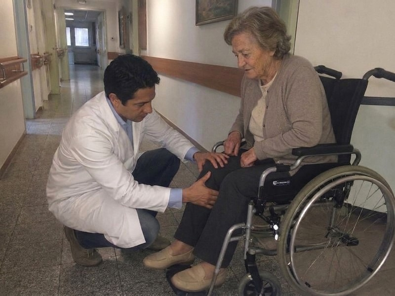
Llegamos un martes por la mañana a La Serena. El camino al hogar de ancianos pasa por calles angostas, entre casas con rejas viejas y perros que ladran. «¿Buscan al doctor joven?» — nos preguntó la señora del almacén de la esquina. «Viene cada jueves. Los viejitos lo esperan en la puerta. Algunos lloran cuando lo ven.»
Así fue como escuchamos por primera vez sobre el Dr. Alejandro Vega — el médico de 30 años que dejó su trabajo en un hospital privado en Santiago para hacer lo que ningún otro médico quería hacer: recorrer hogares de ancianos por todo Chile, tratando a los adultos mayores abandonados por sus familias.
¿La razón del abandono? Casi siempre la misma: los ancianos ya no podían caminar. Las rodillas fallaron. La columna se torció. Las manos les temblaban tanto que no podían sostener una cuchara. Y en ese preciso momento — justo cuando más necesitaban ayuda — la familia decidió que era demasiado. Muy difícil. Muy caro. Y los llevaron a un hogar de ancianos.
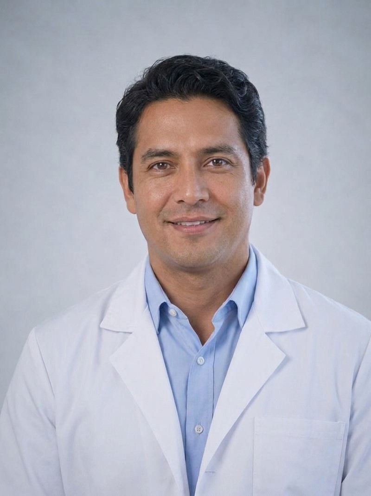
Dr. Alejandro Vega: «Entré por primera vez a un hogar de ancianos como voluntario, a los 28 años. No estaba preparado para lo que vi. Una mujer de 76 años, doña Rosa, estaba sentada al borde de la cama con los pies hinchados y las rodillas que no se doblaban. Llevaba 4 meses sin salir de su cuarto. Me tomó la mano y dijo: "Doctor, mi hija me trajo acá cuando ya no podía bajar las escaleras. Dijo que no podía cuidarme más. Eso fue hace dos años. No ha venido desde entonces."
EN ESE MOMENTO ENTENDÍ QUE ESTAS PERSONAS SON LAS QUE MÁS ME NECESITAN — AQUELLAS A QUIENES EL MUNDO ENTERO OLVIDÓ, PRECISAMENTE PORQUE YA NO PUEDEN CAMINAR.»
El Dr. Alejandro Vega habla con calma, pero con una intensidad que no se puede ignorar. Lleva dos años recorriendo hogares de ancianos por todo Chile — desde Arica hasta Punta Arenas, desde Santiago hasta Puerto Montt. Y en todos lados encuentra la misma imagen desoladora: ancianos con articulaciones destruidas que no reciben ningún tratamiento real, solo pastillas antiinflamatorias que les destrozan el estómago y los riñones.
«La mayoría de estas personas llegaron acá por las articulaciones. Las rodillas fallaron. La columna se trabó. La cadera se desgastó. Y en el momento en que ya no podían caminar solos, la familia decidió que eran una carga. Esa es la palabra que más escucho en los hogares de ancianos: «carga». Describen a sus propios padres como una carga.»
Dr. Alejandro Vega:
— Se los digo con toda honestidad: lo que vi en estos hogares de ancianos me horrorizó. Personas de 55 a 80 años a quienes durante años les dan los mismos antiinflamatorios — pastillas que enmascaran el dolor por unas horas sin resolver la causa. El cartílago se sigue destruyendo. El líquido sinovial desaparece. Las articulaciones rozan hueso contra hueso. Y la química de las pastillas les destruye el estómago, el hígado y los riñones cada día.
Es un círculo vicioso: dolor → pastillas → el dolor regresa más fuerte → pastillas más fuertes → el estómago falla → agregan pastillas para el estómago → los riñones fallan. Y nadie les dice la verdad: que existe un método para regenerar la articulación desde afuera, aplicando directamente donde duele, no solo para adormecer el dolor.
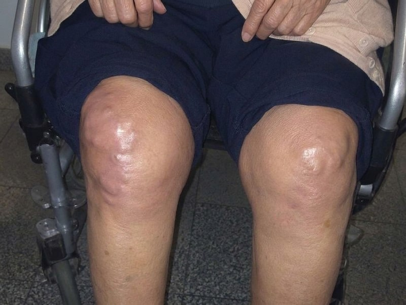
El dolor en las rodillas, la columna o la cadera después de los 45 años no es «normal para la edad» — es una
señal de que el cartílago articular se está destruyendo y el líquido sinovial está desapareciendo.
Las pastillas antiinflamatorias solo bloquean la señal de dolor, mientras la destrucción continúa en silencio.
Sin una regeneración real del cartílago, la articulación se desgasta por completo — y entonces la única opción
es la silla de ruedas o la cirugía de prótesis.
Dr. Alejandro Vega:
— Por favor, entiendan la gravedad de la situación. En la mayoría de estos adultos mayores, el cartílago de la rodilla, la columna o la cadera está destruido en un 70-90%. Caminan — si es que todavía caminan — hueso contra hueso. Cada paso es una tortura. ¡LAS PASTILLAS CONVENCIONALES NO PUEDEN RECONSTRUIR EL CARTÍLAGO — SOLO ENMASCARAN EL DOLOR HASTA QUE TODO SE DERRUMBA!
Y lo que más me duele: estas personas no tienen a nadie. La familia los abandonó justo cuando las articulaciones fallaron. Están solos, en la cama, en un cuarto chiquito, y esperan. Algunos ya no saben qué esperan.
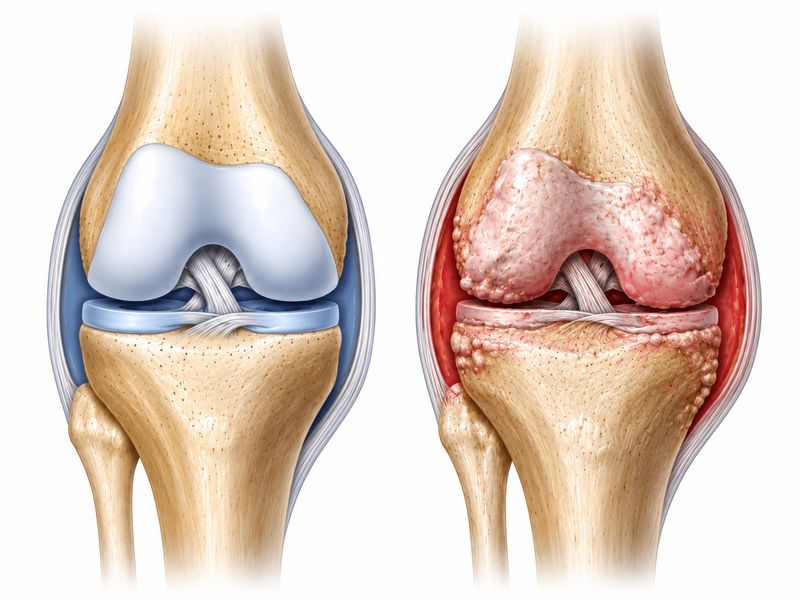
Es importante: en 2 de cada 3 casos, incluso tomando pastillas para el dolor todos los días, las articulaciones siguen empeorando porque la causa real — la destrucción del cartílago y la desaparición del líquido sinovial — sigue sin resolverse.
Después de años tomando antiinflamatorios, muchos pacientes pierden no solo la movilidad, sino también el estómago, el hígado y los riñones. Úlceras, insuficiencia hepática, hinchazón renal — ese es el precio que pagan aquellos a quienes nadie les ofreció una alternativa real.
Dr. Alejandro Vega:
— Permítanme contarles lo que veo cada semana. No números. No estadísticas. Personas. Personas con nombres, con historias, con hijos que ya no vienen.
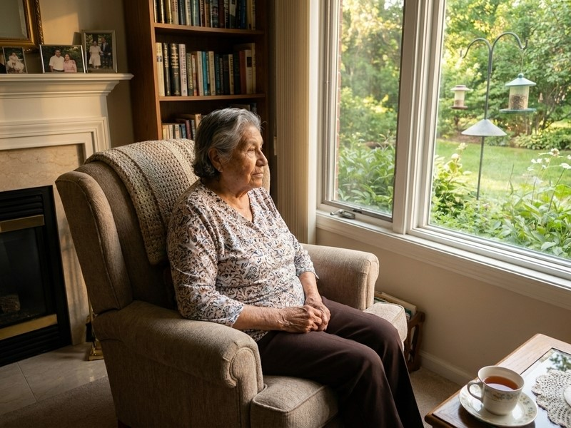
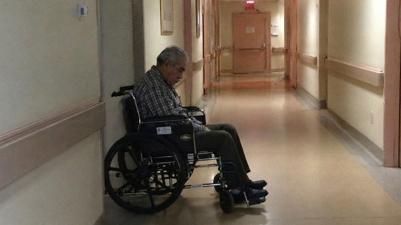
Estos son los síntomas que encuentro con más frecuencia en los hogares de ancianos — y que millones de chilenos ignoran:
Cada uno de estos síntomas es una señal de alarma. Y después de los 45-50 años, ignorarlos lleva a un solo desenlace: INMOVILIDAD TOTAL, SILLA DE RUEDAS, DEPENDENCIA COMPLETA DE OTROS — Y EN MUCHOS CASOS, EL HOGAR DE ANCIANOS.
¡Cada día que pasa con articulaciones sin tratar los acerca más a la inmovilidad permanente! Miles de adultos mayores en los hogares de ancianos llegaron ahí precisamente porque ignoraron el dolor — o solo tomaron pastillas que no resolvían la causa. ¡Actúen ahora — por ustedes mismos o por sus seres queridos — antes de que sea demasiado tarde!
Dr. Alejandro Vega:
— Después de un año visitando hogares de ancianos me di cuenta de una verdad dolorosa: con pastillas antiinflamatorias no voy a salvar a nadie. Estos medicamentos solo silencian la alarma del cuerpo, mientras la articulación sigue destruyéndose. Necesitaba algo completamente diferente: un método que regenere el cartílago desde afuera, restaure el líquido sinovial y detenga la inflamación a nivel celular — aplicado directamente sobre la articulación afectada.
Me contacté con un centro de investigación con el que trabajé durante mis años de especialización. Les presenté los casos, las fotos, los resultados de los exámenes de mis pacientes de los hogares de ancianos. Llevé a los investigadores conmigo a los hogares de ancianos — para que vieran con sus propios ojos lo que pasa ahí. Se quedaron en shock.
Trabajamos juntos más de 10 meses. Probamos más de 180 combinaciones. Y finalmente encontramos la fórmula exacta — un gel de uso externo que al aplicarse penetra directamente al tejido articular y activa la regeneración natural del cartílago. No una pastilla antiinflamatoria que solo enmascara el dolor. Un gel articular avanzado que actúa desde afuera hacia adentro, justo donde realmente se necesita.
La fórmula del gel desarrollado por el Dr. Alejandro Vega contiene los siguientes ingredientes activos:
Estos ingredientes son difíciles de obtener en la concentración necesaria. Combinarlos en las proporciones exactas requiere tecnología especializada — si las proporciones se desvían aunque sea un 0,1%, el gel no logra la penetración necesaria y no activa la regeneración del cartílago.
Dr. Alejandro Vega:
— Junto con el centro de investigación logramos fabricar este producto: un gel de uso externo que actúa directamente sobre las articulaciones afectadas — rodillas, columna, cadera, manos, cuello. Se llama FlexiGo. Se aplica dos veces al día, en la mañana y en la noche, con un suave masaje sobre la zona afectada. Los ingredientes activos penetran a través de la piel directamente al tejido articular — con alta biodisponibilidad y sin los efectos secundarios de los antiinflamatorios orales que destruyen el estómago.
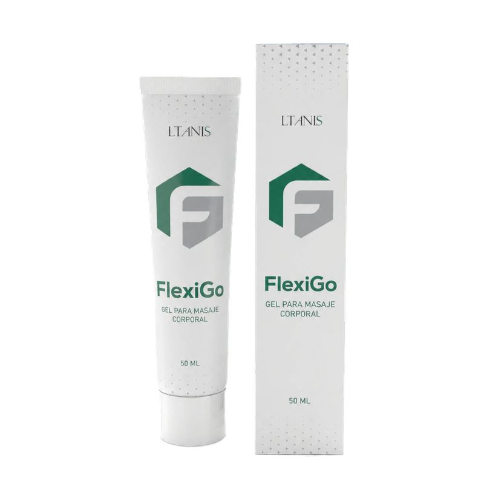
El secreto está en la «Tecnología de Penetración Articular Profunda» que desarrollamos con el equipo del laboratorio. Este método permite que los ingredientes activos atraviesen la barrera de la piel y lleguen directamente al tejido cartilaginoso — ahí donde el cartílago se destruye — con 5 veces más efectividad que cualquier gel o pomada articular común del mercado.
«FlexiGo» no tiene competencia. Cada ingrediente — en la concentración exacta — activa la regeneración del cartílago, la restauración del líquido sinovial y la detención de la inflamación. Es el único gel que actúa a nivel celular, directamente sobre las articulaciones afectadas — rodillas, columna, cadera, manos, cuello — sin dañar el estómago ni el hígado, porque no pasa por el sistema digestivo. Y lo más importante: funciona incluso en personas de 70, 80, 85 años. La probé primero con mis pacientes de los hogares de ancianos — con personas que nadie más trataba.
Dr. Alejandro Vega:
— Los primeros pacientes fueron los adultos mayores abandonados de los hogares de ancianos. Personas que las familias dejaron botadas. Les apliqué el gel FlexiGo. Y esperé. Al tercer día — doña Raquel, que llevaba 4 meses sin levantarse de la cama, dio sus primeros pasos sola. Los dos lloramos.
Dr. Alejandro Vega:
— Los primeros pacientes fueron los adultos mayores abandonados de los hogares de ancianos. Aquellos a quienes nadie más trataba. Los resultados fueron tan impresionantes que el centro de investigación extendió las pruebas a un grupo de más de 2.300 personas de todo Chile — cubriendo todo tipo de problemas articulares: rodillas, columna, caderas, manos, cuello.
Vi personas de 80 años que no podían caminar — y que 6 semanas después salían solas al patio del hogar de ancianos. Las enfermeras lloraban. Yo lloraba con ellas.
| Eliminación total del dolor de rodilla | 96,2% |
| Eliminación del dolor de columna y rigidez matutina | 94,7% |
| Artrosis grado 1-2 (recuperación total de movilidad) | 98,1% |
| Artrosis grado 3 (mejora significativa) | 87,3% |
| Coxartrosis (dolor de cadera) | 91,5% |
| Hernia de disco (reducción del dolor y adormecimiento) | 89,4% |
| Artritis reumatoide (dedos de las manos) | 93,8% |
| Recuperación total de movilidad articular | 95,6% |
| Eliminación de hinchazón y calambres nocturnos | 97,0% |
| Capacidad de caminar sin ayuda | 94,3% |
Doña Carmen Muñoz fue la primera paciente del Dr. Alejandro Vega en el hogar de ancianos de Viña del Mar, Región de Valparaíso. Con 84 años, artrosis grado 3 en ambas rodillas y coxartrosis en la cadera izquierda, no podía caminar desde hacía 14 meses. Su hijo la llevó porque «ya no podía cargarla hasta el baño». No la ha visitado en dos años.
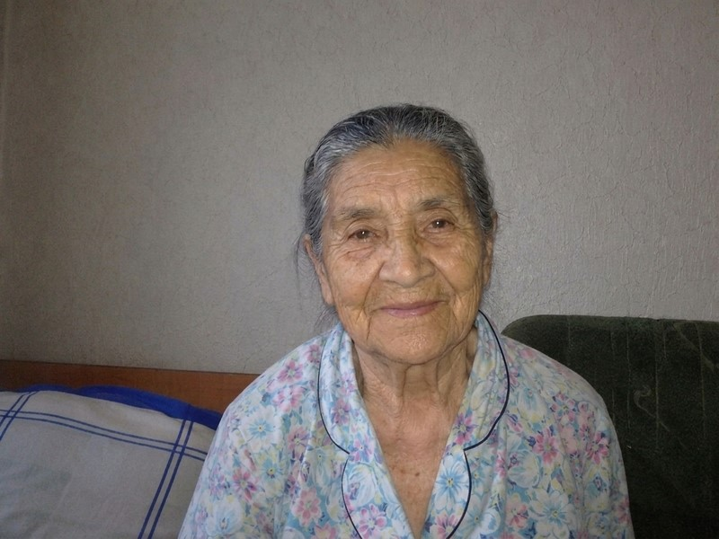
«No creía que alguna vez volvería a caminar. Mis rodillas estaban tan hinchadas que no podía doblarlas. Me paseaban por el cuarto en silla de ruedas. En la mañana me despertaba y no podía mover ni un dedo durante una hora. Era como si mi cuerpo hubiera muerto, pero yo seguía viva.
Mi hijo me trajo acá porque ya no podía levantarme de la cama. Dijo: "Mamá, te voy a visitar cada domingo." Lleva dos años sin venir. No lo culpo — tiene su vida. Pero en la noche, cuando el dolor me despierta y no hay nadie a mi lado… es muy pesado.
Y entonces llegó el Dr. Alejandro Vega . Fue la primera persona que tocó mis rodillas sin hacer caras de asco. Me explicó qué estaba pasando en las articulaciones. Y me aplicó el gel. A la semana ya podía doblar la rodilla izquierda. Al mes me levanté sola de la cama. A los dos meses — salí al patio. Llevaba 3 años sin salir.
La enfermera lloró cuando me vio. Yo lloré más. No porque estaba caminando. Sino porque alguien — un doctor joven que jamás había conocido — me dio más de lo que me dio mi propio hijo.
Carmen Muñoz, 84 años, hogar de ancianos en Viña del Mar, Región de ValparaísoOtro caso: don Patricio, 58 años, albañil toda su vida, con la columna destrozada por hernias de disco. Su señora lo abandonó cuando ya no pudo trabajar.
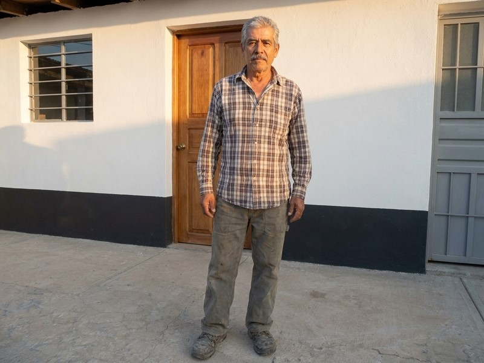
«Fui albañil 30 años. La columna me falló a los 54 — dos hernias de disco y ciática. No podía ni pararme, ni acostarme. Todo me dolía. Mi señora se fue — dijo que no podía cuidar a un inválido. No la culpo.
Mi hermana se enteró del Dr. Alejandro Vega por una vecina. Me mandó el gel FlexiGo. Empecé a aplicarlo, en la mañana y en la noche, sobre la espalda baja y la cadera. Al tercer día sentí el primer alivio. A las 3 semanas — podía ir a la tienda otra vez. A los 2 meses — volví a trabajar medio tiempo.
A veces me despierto en la mañana, me levanto de la cama sin dolor y me detengo un momento. Me quedo parado y no puedo creer que sea verdad. Que ya no duela. Si no fuera por el Dr. Alejandro Vega , quizás ahora yo también estaría en un hogar de ancianos.»
Dr. Alejandro Vega:
— El tiempo mínimo de uso es de 30 días, pero en casos severos de artrosis o hernia de disco pueden necesitarse 2-3 meses. Sin embargo, en todos los casos — sin excepción — se observa una disminución del dolor, regeneración del cartílago y recuperación de la movilidad.
FlexiGo actúa desde la primera aplicación: el dolor disminuye, la inflamación baja, el movimiento se vuelve más fácil. Pero la verdadera magia sucede con el tiempo: el cartílago se regenera, el líquido sinovial regresa, la articulación se «rejuvenece» desde adentro. He visto personas de 80 años que volvieron a caminar. He visto manos que no podían sostener un vaso, levantar una cuchara a la boca. He visto columnas encorvadas que se enderezaron. Y en cada caso — he visto lágrimas de alegría.
Gracias al método del Dr. Alejandro Vega , más de 12.000 personas en Chile han recuperado la movilidad de sus articulaciones. Acá algunos casos:
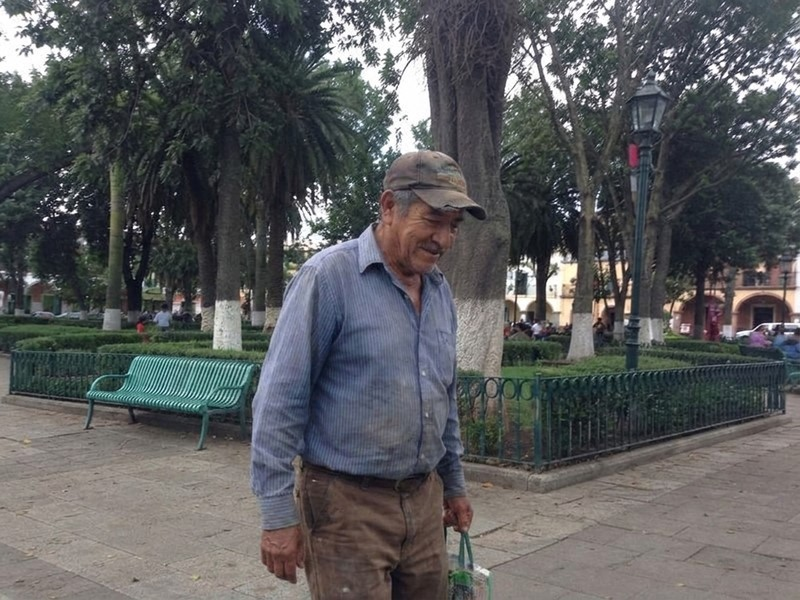
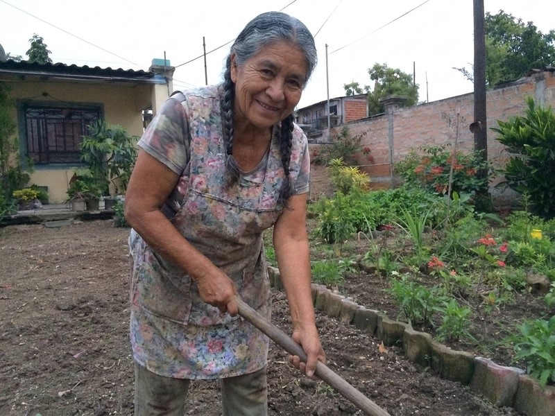
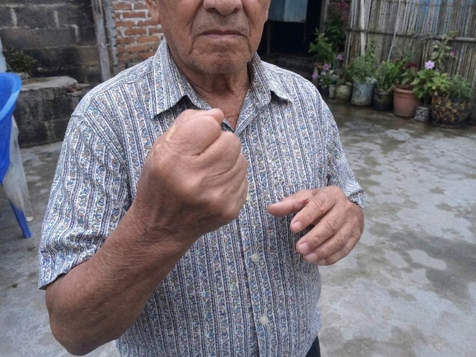
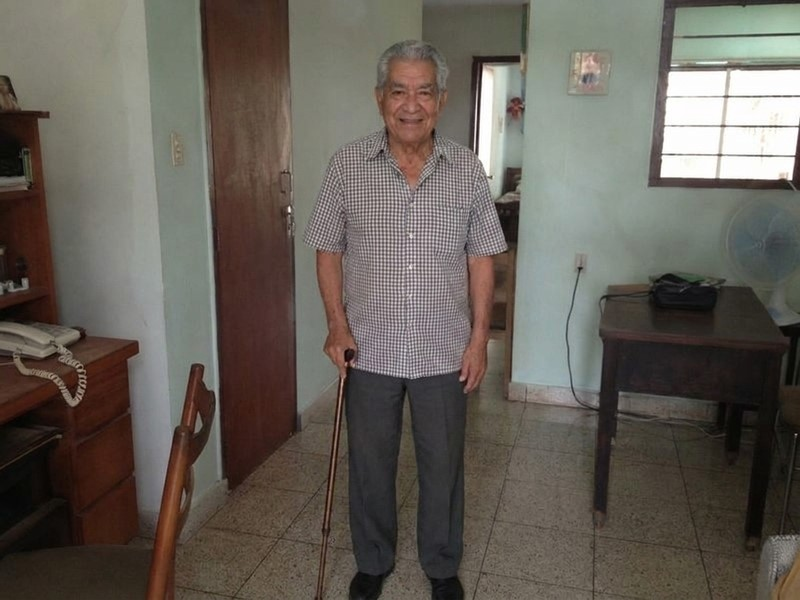
Dr. Alejandro Vega:
— Estos casos son prueba viva de que las articulaciones pueden regenerarse — incluso cuando el diagnóstico parecía una sentencia. Sin cirugía. Sin pastillas que destruyen el estómago. Y lo que me da la mayor alegría: muchas de estas personas son adultos mayores de los hogares de ancianos — aquellos que el mundo olvidó. Pero yo no los olvidé. Y FlexiGo tampoco los olvida.
Dr. Alejandro Vega:
Lamentablemente, la fabricación de FlexiGo es un proceso complejo y costoso. Los ingredientes son escasos — alcanfor de alta pureza, aceites esenciales de jengibre y canela, extractos concentrados de equinácea y romero — y son difíciles de obtener en las cantidades necesarias. No estamos en capacidad de cubrir toda la demanda.
Se necesitan al menos 2-3 años para que FlexiGo llegue a las farmacias. Hasta entonces, el producto se distribuye exclusivamente en línea, dentro de programas de apoyo, dos veces al año. Sin embargo, los descuentos pueden llegar hasta el 50% — lo cual es fundamental para los adultos mayores con pensiones limitadas.
Les pido: NO DEJEN PASAR EL PROGRAMA DE APOYO. No solo por ustedes — sino por sus padres, sus abuelos, sus seres queridos que quizás están sufriendo en silencio. O por aquellos que ya están en un hogar de ancianos, solos, y nadie les manda nada. Sean ustedes la persona que hace la diferencia.
Para hacer su pedido, usen el formulario de abajo.
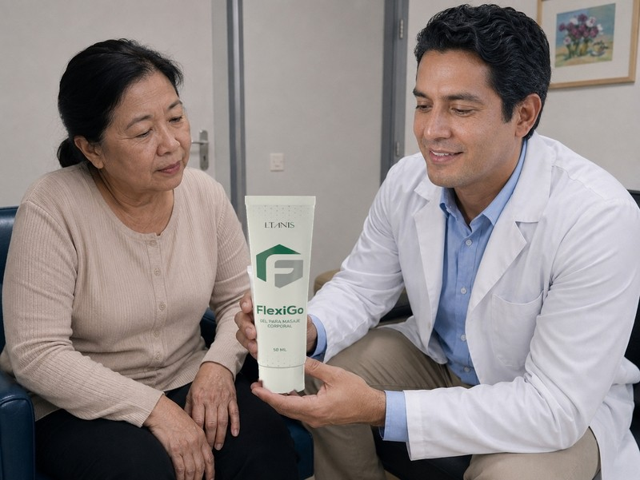
Dr. Alejandro Vega:
— He reservado 20.000 unidades exclusivamente para los lectores de este portal. Todo ciudadano chileno mayor de 40 años puede obtener un descuento de hasta el 50%, pero el programa termina el .
No esperen hasta que ya no puedan subir las escaleras. Hasta que las rodillas fallen por completo. Hasta que la columna se trabe. Y sobre todo — no esperen hasta convertirse en una «carga» para su familia. FlexiGo tiene efecto acumulativo y es suficiente aplicarlo una vez al año como prevención.
Escriban su nombre y número de teléfono. Un asesor se pondrá en contacto con ustedes, seleccionará el programa adecuado y organizará el envío en 2-3 días por courier directamente a la dirección indicada.
Con esperanza y respeto — Dr. Alejandro Vega. Cuiden a sus seres queridos. Quizás lo único que necesitan es saber que no los han olvidado.
Actualización: : ¡Debido a la enorme demanda, las existencias podrían agotarse antes de lo esperado! Hoy — — es el último día del programa o hasta agotar existencias.
¡Atención! No cierren ni actualicen esta página, de lo contrario la unidad de FlexiGo reservada para ustedes será asignada a otra persona.
Aprovechen la oferta — su lugar está reservado: N.° 19 974
COMENTARIOS
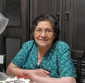
María Eugenia Soto
Lloré leyendo este artículo. Mi mamá tiene 76 años y lleva 2 años en un hogar de ancianos — precisamente porque las rodillas le fallaron y no pudimos cuidarla. Es mi mayor culpa. Pedí FlexiGo para ella. Ojalá todavía no sea tarde. Dios quiera que funcione.
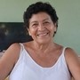
Francisca Reyes Valdés
Me llegó el FlexiGo el viernes pasado. Me lo unto en la mañana y en la noche en las rodillas. A los 5 días — el dolor bajó muchísimo, ¡puedo bajar las escaleras sin agarrarme del barandal! La historia del doctor me convenció de pedirlo. Un ser humano increíble.
Gloria Sepúlveda Aravena
Tengo 69 años. La columna me atormentó por 4 años — hernia de disco y ciática. No podía agacharme a amarrarme los zapatos. Los doctores me daban antiinflamatorios que me destrozaron el estómago. Después de 3 semanas con FlexiGo — el dolor casi desapareció. Voy sola a la feria, hago mis compras, cocino. Volví a vivir.
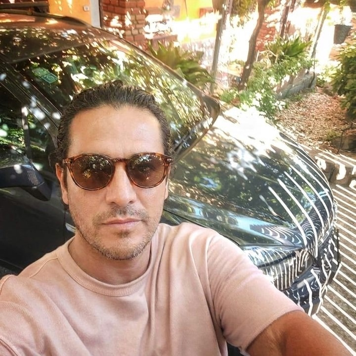
Rodrigo Cárdenas Pizarro
Trabajo en oficina 10 horas al día. La columna y el cuello me fallaron. El doctor me dijo: «O deja la pega, o cirugía.» Yo elegí FlexiGo. Después de 5 semanas — cero dolor. Y todo mi respeto para el Dr. Alejandro Vega — en un mundo donde todos quieren plata, él va donde los viejitos olvidados.
Alejandro Morales Bravo
Pedí 3 unidades — para mí (rodillas), para mi señora (manos, artritis) y para mi suegro en el hogar de ancianos. No podemos ir a verlo seguido, pero al menos le mandamos lo que necesita. Ojalá a él también le funcione. Gracias por el artículo.
Claudia Fuentes Rojas
Estoy pensando si pedir para mi papá. Lleva 3 años en un hogar de ancianos — las rodillas ya no le funcionan para nada. Se rindió, casi no habla. ¿Creen que el FlexiGo todavía pueda ayudar a los 78 años?
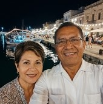
Marcela Vergara
Claudia, ¡mi mamá tiene 82 años! Artrosis severa en ambas rodillas, no podía levantarse de la cama. Usó FlexiGo 2 meses — ahora sale sola al patio. No exagero. Y lo más bonito: cuando la fui a ver, me recibió parada en la puerta. Las dos lloramos. Pídelo sin dudar, tu papá se merece la oportunidad.
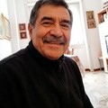
Don Raúl Contreras
Claudia, pídelo nomás, sin miedo. Yo a los 78 años estaba a un paso de la silla de ruedas — coxartrosis. El FlexiGo me puso de pie en 2 meses. Literal. Tu papá lo necesita más de lo que te imaginas.
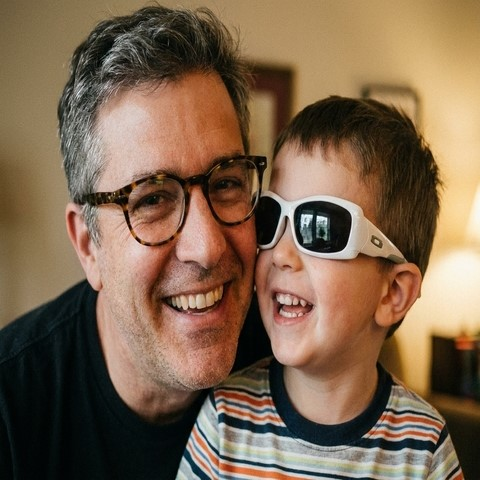
Patricia Núñez Lagos
Llevo una semana untándomelo. En la mañana ya no estoy «tiesa». Me puedo agachar, me puedo levantar sin quejarme. Pedí para mi vecina también — tiene 73 años, vive sola y se agarraba de las paredes para caminar por su casa.
Ana María Bustamante
A los 68 años pensé que nunca más iba a poder trabajar en la chacra. Las rodillas y la columna me tenían paralizada. FlexiGo cambió todo — a las 4 semanas ya estaba sembrando la primera parcela de este año. La historia del Dr. Alejandro Vega me llegó al alma. Todavía hay gente buena en este mundo.
Don Manuel Garrido
Tengo 82 años. El año pasado no podía ir solo al baño. Los hijos ya hablaban de meterme al hogar de ancianos. Probé el FlexiGo — sin mucha esperanza. ¡Y funciona! Camino solo, me visto solo, salgo hasta el portón solo. Los hijos ya no hablan del hogar de ancianos. Esa es mi mayor alegría en la vida.
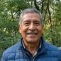
José Miguel Arriagada
Mi señora no podía bajar las escaleras. Se agarraba de la pared y lloraba del dolor. Tenía miedo de perderla — no por la enfermedad, sino por la desesperación. Pedí FlexiGo con descuento. A las 4 semanas — ayer bajó sola al mercado y volvió con flores. ¡Con flores! Gracias de todo corazón.
Lorena Riquelme Vidal
Pedí 4 unidades — para mi mamá (hogar de ancianos, rodillas), para mi papá (en la casa, columna) y 2 para mí (manos, artritis en los dedos, ya no podía escribir). Las historias del artículo me destrozaron. Debí haberlo hecho hace mucho. Ya no tengo excusas.
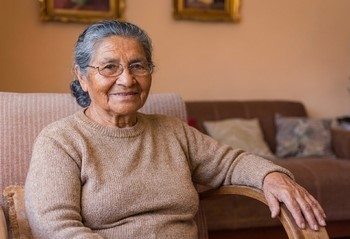
Carolina Espinoza Muñoz
¡Ya me llegó el FlexiGo — el paquete llegó en 2 días! Ya se lo llevé a mi mamá en el hogar de ancianos. Tengo mucha esperanza. Voy a mandarle este artículo al personal del hogar de ancianos — a ver si se contactan con el Dr. Alejandro Vega .
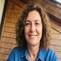
Felipe Oyarzún
Busqué el FlexiGo en la farmacia — no lo tienen. Me dijeron que hay que pedirlo desde esta página. Ojalá todavía quede. Mi abuelito lo necesita urgente — tiene 81 años y ya no puede caminar nada.